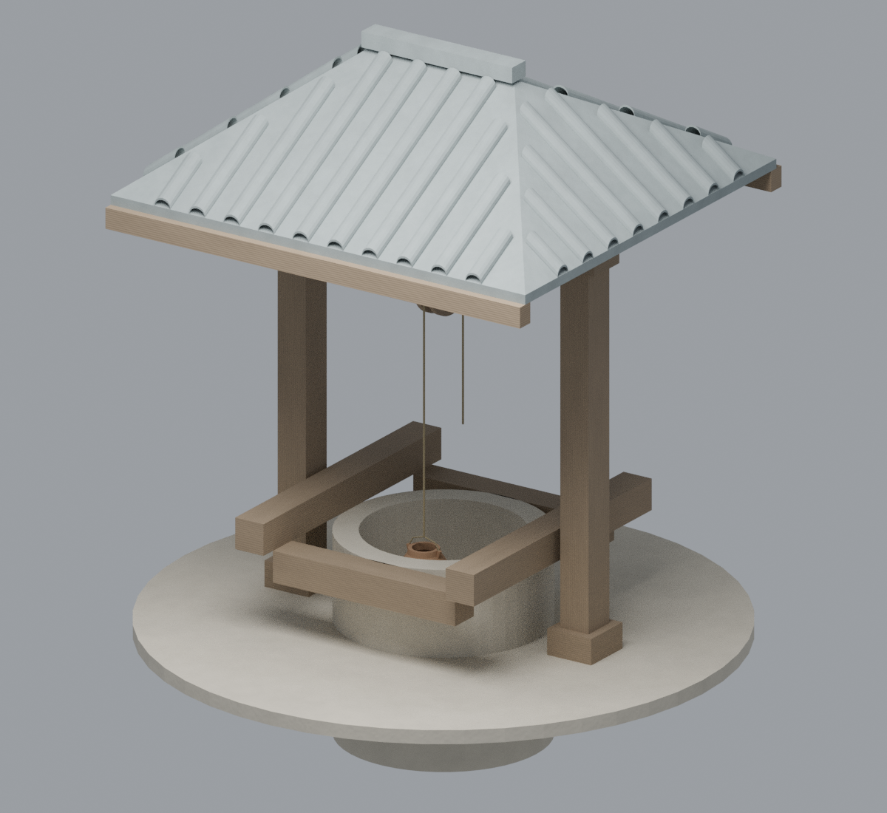

第7资产候选 · 尚未公开 · 未入城；A/B与两LOD合为一个家族，不计四件作品。
造物手记 / 独立模型库候选 / 尚未落城
井栏与井架
REALTIME MODEL研究模型 · 非设计验收

静态CPU参考 · 代表变体进入详情后仅加载所选模型。拖动旋转、双指或滚轮缩放；方向键旋转，＋/－缩放，R复位，Esc关闭。
从真实井口、提水路径到屋面遮蔽。两种几何方案依据汉代明器馆文作关联设计，尺寸与机构均为C假设，不是东汉洛阳某井的复原。
离线CPU参考保留于此。GPU与手机效果尚未验收。
根据什么设计
河南博物院馆文记东汉中晚期灵宝张湾井字栏、四坡亭和绳槽轮；刘家渠晚汉类型包含圆口折沿与两坡亭。原图本轮未实际看成功，只按馆文类比，不称看图复制。
原馆文章哪些仍是推测
井口大小、支架尺度、轮轴承托、绳径与全部色彩。地下仅展示截断短壁，不代表井深、水位；不推定每院有井。屋瓦为简化层次，不是构造考古验收。
B方案CPU图 · 井口近景 · 轮绳机构 · 复用边界与复盘